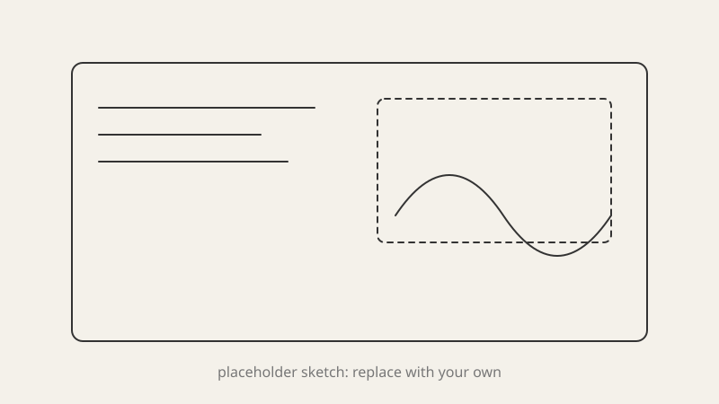

Process
What I set out to try, and why.

Iteration notes. What changed between attempts, and what each one taught me.
Result
What worked, what did not, and what I would push further.
Critique
Feedback from class goes here.
What I set out to try, and why.

Iteration notes. What changed between attempts, and what each one taught me.
What worked, what did not, and what I would push further.
Feedback from class goes here.